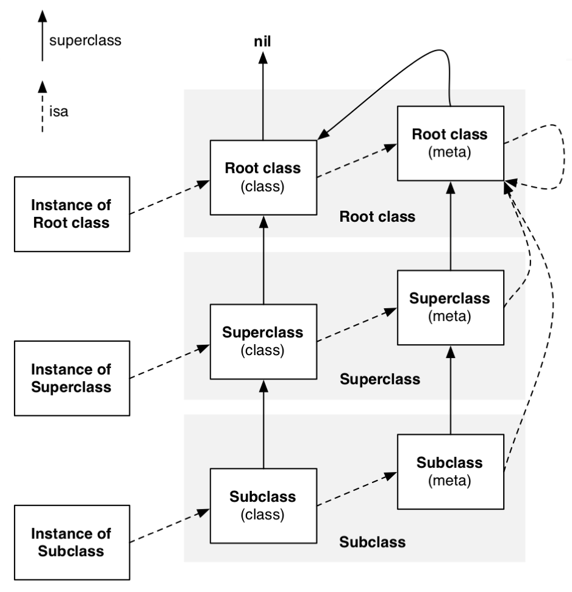
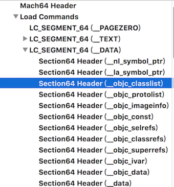
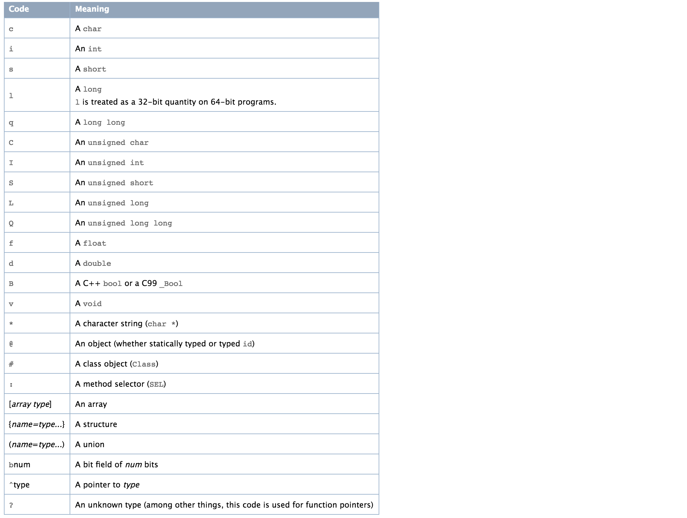
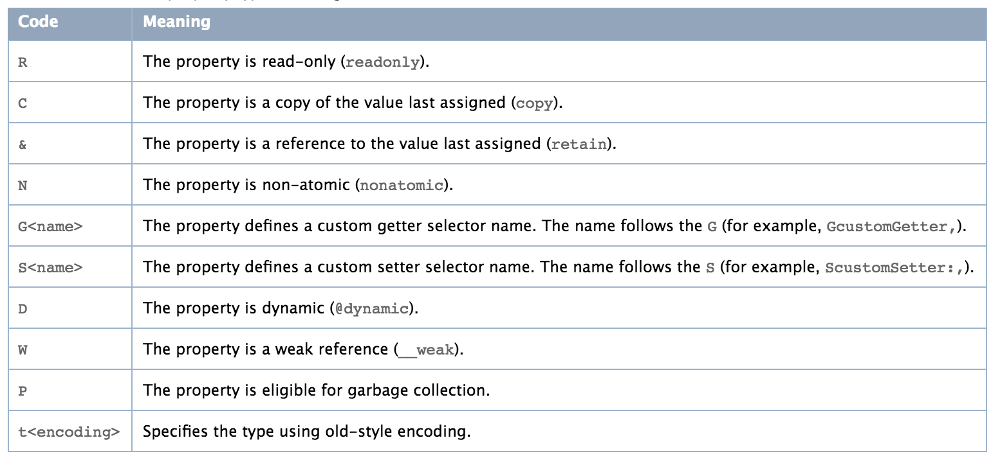
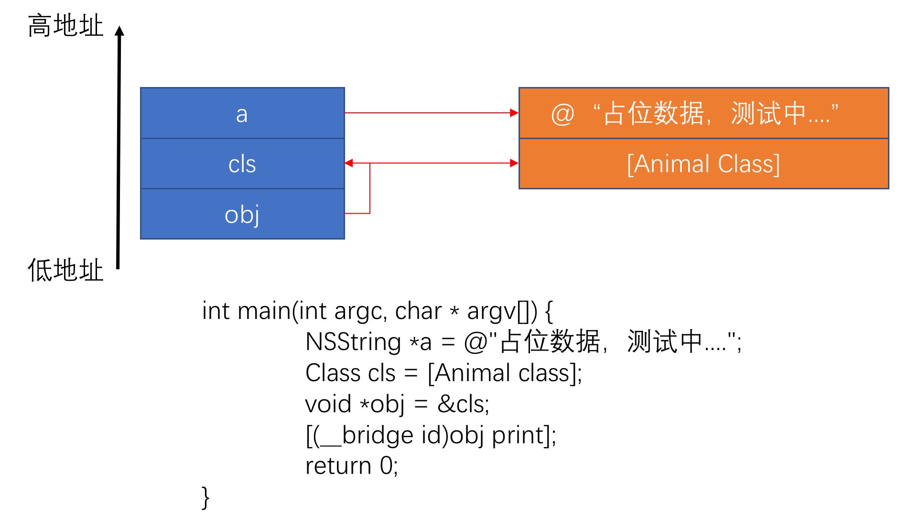
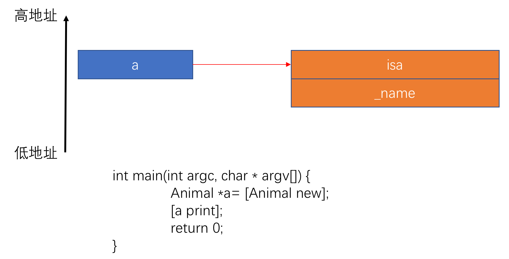
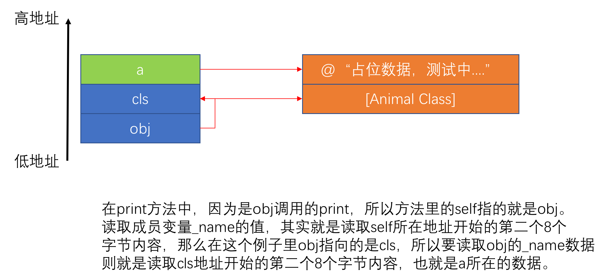

Objective-C作为一门动态语言，其核心就是Runtime。本篇将从源码着手，分析Runtime的几个关键地方，使得我们可以更好的理解Runtime的运行机制。我们所有的类都继承于NSObject，所以我们先把结构列出来
1 | // 每个OC对象都有一个isa成员 |
所以NSObject的结构可以大致看成下面这样的：
1 | @interface NSObject <NSObject> { |
0x01 isa
在ARM64之前，isa是直接指向类对象或元类对象的地址，但是在ARM64的时候，isa包含了更多的信息。isa_t是一个共用体(union)，结构如下：
1 | union isa_t |
作为共用体，所有成员共享一块区域。uintptr_t表示的是unsigned long，大小是8个字节，其作为共用体里最大的成员，所以这个共用体也占据8个字节的大小，可能这里有些人会觉得疑惑，明明struct里有9个uintptr_t成员，怎么会共用体才8个字节。要解释这个问题，我们需要知道位域这个概念。
位域，是指信息在存储时，并不需要占用一个完整的字节，我们可以指定其大小。这样做的目的可以使得我们可以节省空间。举个例子，假设我们养一个宠物，给它设定三个属性，分别为吃饭了没，喝水了没，洗澡了没。
1 | @property (nonatomic, assign) BOOL eat; |
我们知道，BOOL占用一个字节，三个属性占用了三个字节。对于这三个属性的值非真即假，用三个字节我觉得很浪费，那么如何使用位域更节省的使用空间呢？对于一个属性非真即假，我们用二进制就可以来满足，1个字节又有8位，所以三个属性的结果只需要3位即可满足。比如睡觉在最后一位，喝水倒数第二位，睡觉倒数第三位，假如满足吃饭的条件，值就是0b0000 0001。如果满足吃饭也满足喝水，值就是0b0000 0011，以此类推。
1 | @interface Animal : NSObject |
回到isa_t共用体，我们详细解释下里面每一位的意思：
nonpointer，占据1位
0 : 直接执行类地址或者元类地址
1：包含更多信息
has_assoc，占据1位
0：没有关联对象
1：有关联对象
has_cxx_dtor，占据1位
0：没有C++类的析构函数
1：有C++类的析构函数
shiftcls， 占据33位
类地址或元类地址，具体值的算法= isa的地址 & 0x0000000ffffffff8
magic，占据1位
0：对象没有完成初始化
1：对象完成初始化
weakly_referenced，占位1位
0：没有被弱引用指向
1：有被弱引用指向
deallocating，占据1位
0：没有正在被释放
1：正在被释放
has_sidetable_rc，占据1位
0：引用计数器可以被保存在isa里
1：引用计数器太大，不能保存在isa里
extra_rc，占据19位
存储引用计数 - 1的值
首先，证明在ARM64上isa已经不是直接指向类对象或元类对象，测试代码如下：
1 | int main(int argc, char * argv[]) { |
我们发现的确isa的地址跟类地址的值是不一致的，要通过isa拿到真实的类地址需要与上0x0000000ffffffff8
1 | p/x 0x000001a1025496d5 & 0x0000000ffffffff8 |
将0x0000000ffffffff8转换成二进制值
1 | p/t 0x0000000ffffffff8 |
与上面说的shiftcls一致，即倒数第四位开始的33位。我们知道如果要取值，就是与1进行取与操作
1 | 0x000001a1025496d = 0b0000000000000000000000011010000100000010010101001001011011010101 |
接着，我们设置一下关联对象，证明has_assoc是否会变为1
1 | 设置前:0b0000000000000000000000011010000100000010010101001001011011010101 // 倒数第二位为0 |
其他位就不一一做实验了。
0x02 方法查找流程

在之前的Category文章里，其实已经提到这个，所有的调用流程如上图所示。我们只需要记住，实例对象只保存成员变量的值，实例对象的方法(比如- (void)eat;)保存在其类对象的方法表里，以及协议信息和成员变量信息(名字，大小等)也是保存在类对象对应的协议表和成员变量表中。而类方法(比如+ (void)eat)，则保存在元类(meta-class)的的方法表中。
所以下文的表述中，如果说的是类的方法表，说明找的是实例方法；如果说的是元类的方法表，说明找的是类方法。
0x03 objc_msgSend
objc_msgSend是通过汇编代码实现的，Objective-C中调用方法实际都是走的objc_msgSend函数，所以这个函数是会被十分频繁的调用，以汇编实现将提升效率。
我们首先写下测试代码：
1 | Animal *a = [Animal new]; |
符号断点在eat方法上，看下objc_msgSend汇编代码，所有方法调用都会带两个参数，一个是self，即调用者，第二个是_cmd，即调用方法，分别保存在x0和x1寄存器里。
1 | libobjc.A.dylib`objc_msgSend: |
注解① 回到NSObject结构，我们可以发现偏移16个字节就是cache_t成员的位置。
1 | @interface NSObject <NSObject> { |
所以，我们可以发现cache成员位置开始取16个字节，其实就是把散列表bucket_t的首地址保存到x10寄存器；我们知道一个寄存器占用8个字节，所以mask掩码保存到x11寄存器的低32位，occupied保存到x11寄存器的高32位。
上面的流程总结如下：
- 判断对象是否为空
- 取到isa地址
- 根据isa地址拿到类对象的地址
- 来到缓存成员cache_t的地址，为的是开始遍历缓存散列表
- 计算出我们调用方法在散列表的位置index
- 根据散列表首地址和散列表成员长度计算出方法在散列表的具体地址：方法地址 = 首地址 + 成员长度 * index
- 比较我们调用的方法名字和散列表中找到的方法的名字是否一致，如果方法名字为空(说明肯定没被缓存过)，那么就跳转到_objc_msgSend_uncached函数，一般第一次调用方法都会执行到这里的时候就跳转走了。
- 如果调用的方法有名字(说明被缓存过了)，且一致的话就直接调用函数执行地址。
- 不一致的话，往前找前一个成员，也是进行名字比较。依次类推，直到来到首地址。
- 如果来到首地址，这时候还是没找到跟我们调用方法名字一致的散列表成员，就扩大搜索范围，来到散列表尾部再往前一个个遍历，查找与调用方法名字一致的散列表成员。
- 第二次来到表头还是没找到，就调用_objc_msgSend_uncached函数。
前面说到，如果缓存里找不到缓存，就会调用_objc_msgSend_uncached，我们看下源码
1 | STATIC_ENTRY __objc_msgSend_uncached |
源码里有一个MethodTableLookup的宏
1 | .macro MethodTableLookup |
里面调用c函数__class_lookupMethodAndLoadCache3
1 | IMP _class_lookupMethodAndLoadCache3(id obj, SEL sel, Class cls) |
_objc_msgForward_impcache又是一个汇编函数
1 | b 0x183c5cda0 ; _objc_msgForward |
内部就是调用_objc_msgForward函数，里面就是跳转到CoreFoundation里的CF_forwarding_prep_0
1 | 0x183c5cda0 <+0>: adrp x17, 209389 |
_CF_forwarding_prep_0继续会调用___forwarding___函数，
1 | CoreFoundation`_CF_forwarding_prep_0: |
里面进行转发流程，如果转发流程中的方法都没被实现，那么调用调用doesNotRecognizeSelector方法，程序就此闪退。汇编还是比较好理解，所以直接阅读一部分汇编代码，如果有兴趣阅读全部的汇编代码，只需要自己下符号断点，自己观察即可：
1 | CoreFoundation`___forwarding___: |
这部分流程总结如下：
- 再次从缓存查找一次。
- 如果缓存还是没找到，去类对象的方法表里查找方法，如果找到，就保存到缓存，并执行这个方法。
- 如果类对象方法表里也没找到，就先去父类的缓存表里找，如果缓存表也没找到，就取找父类的方法表，如果找到，同样缓存方法到缓存，如果还是没找到，继续往上一层父类查找。
- 以此类推，直到找到基类，即NSObject类的方法表。
- 到了基类还是没找到，那么就先判断自己是不是元类，不是元类的话调用resolveInstanceMethod方法；是元类的话，先调用resolveClassMethod方法，接着去类的方法表一层一层查找有没有实现这个实例方法，如果也没找到就调用resolveInstanceMethod方法。
- 如果resolveInstanceMethod方法或者resolveClassMethod方法也没被调用，开启转发流程。
- 先调用forwardingTargetForSelector，如果这个方法返回nil，继续调用methodSignatureForSelector，如果返回不为空继续调用forwardInvocation；如果还是为空，调用doesNotRecognizeSelector，则闪退报错
0x04 Runtime的初始化
这部分内容在Category文章里粗略讲述过一遍，这里将会带着源码详细走下初始化流程
1 | void _objc_init(void) |
load_images函数其实就是调用类的+load方法，这里不重复介绍，Category文章里讲的很详细了。
1 | void map_images(unsigned count, const char * const paths[], |
我们直接看如何加载Mach-O信息，通过map_images函数获取所有的类相关的数据。
1 | void map_images_nolock(unsigned mhCount, const char * const mhPaths[], |
Mach-O信息加载进来后，就要从数据段里读取相应的内容，并将构建成我们具体使用的类，我们的类，协议，分类等 都在数据段里，如下图。

1 | void _read_images(header_info **hList, uint32_t hCount, int totalClasses, int unoptimizedTotalClasses) |
通过上面的源代码，可以知道，我们的类的都是从Mach-O得到的，一开始还没被动态链接，所以这个类是不能被使用的，整个初始化流程可以总结如下：
- 通过Mach-O数据区里的
__objc_classlist段，获取所有类，并注册进一个类映射表，通过这个表以后可以根据类名可以很快的得到这个类。 - 读取数据区
__objc_selrefs段，获取所有被引用的方法，并注册进一个方法映射表 - 读取数据区
__objc_protolist段，获取所有协议，并注册进一个协议映射表 - 读取数据区
__objc_nlclslist段，获取所有实现了+(void)load的类，并提前链接好类，使得这个类已经准备好被使用 - 读取数据区
__objc_catlist段，获取所有分类，并注册进一个分类映射表 - 链接所有类，使得所有类做好被使用的准备。其中包括开辟class_rw_t区，使得类的数据可以即可读又可以写，并且排列好父子关系链，最后将分类的信息前插进类的各个信息表中。
0x05 @property分析
@property定义的属性，我们知道在不是分类的情况下，会自动生成getter、setter和成员变量。其实这一切都是在编译器完成的，虽然这块不涉及runtime，但是前面我们知道类构建的时候会基于class_ro_t结构重新生成一个class_rw_t结构。而class_ro_t保存的其实就是编译期类的信息，其中包括属性拆解后的信息。
定义测试代码如下
1 | @interface Animal : NSObject |
clang转成c++代码看下
1 | struct _class_ro_t { |
通过转换的代码可以很清楚看到，属性的确是在编译期被拆解到class_ro_t结构的各个表中。我们看下成员变量表的初始化
1 | static struct /*_ivar_list_t*/ { |
ivar_list装的是ivar_t，其结构如下，拿上面第一个ivar_t结构举例：
1 | struct ivar_t { |
OBJC_IVAR_$_Animal$_age表示成员的偏移地址，这样做的好处是只要拿到实例的地址，再加上偏移地址就能直接访问成员变量，快速的进行取值和赋值。
1 | extern "C" unsigned long int OBJC_IVAR_$_Animal$_age __attribute__ ((used, section ("__DATA,__objc_ivar"))) = __OFFSETOFIVAR__(struct Animal, _age); |
其他方法表和属性表初始化也类似，这里不做复述，但是我们看到在方法表中还有这样的代码
1 | {(struct objc_selector *)"age", "i16@0:8", (void *)_I_Animal_age}, |
i16@0:8是什么样的格式，这其实是@encode指令，可以将具体的类型表示成字符串编码。

那么i16@0:8是什么意思呢？
i：表示返回int类型
16：表示整个方法占据16个字节
@：表示第一个参数，即对象，方法中默认带两个参数self和_cmd，这里就是指self
0：表示其从偏移位置0开始的8个字节，之前说过这个方法占据16个字节，self占据其中8个字节
：:表示第二个参数，是一个方法，即_cmd
8：表示偏移位置8开始的8个字节，即方法占据16个字节的后8个字节。
v20@0:8i16再来一个setter方法
v：表示返回void
20：表示整个方法占据20字节
@：表示第一个参数对象，即self，占据8个字节
0：表示对象从偏移值0开始占据8个字节
：表示第二个参数，是一个方法，即_cmd
8：表示方法是从偏移值8开始占据8个字节
i：表示第三个参数，int类型的参数
16：表示第三个参数从偏移值16开始占据4个字节
所有参数加起来的确是20个字节。继续回到这个方法表中，_I_Animal_age就是函数的实际执行地址
1 | {{(struct objc_selector *)"age", "i16@0:8", (void *)_I_Animal_age}, |
这里也验证了默认带的两个参数：self、cmd。OBJC_IVAR_$_Animal$_age前面说过表示的是成员变量的偏移地址。，通过self+偏移地址直接拿到值
1 | static int _I_Animal_age(Animal * self, SEL _cmd) { |
不同于getter，setter的执行函数内部是这样的，拿到成员变量偏移地址后赋值
1 | static void _I_Animal_setAge_(Animal * self, SEL _cmd, int age) { |
如果我自己实现了setter方法，代码又会如何变化
1 | - (void)setAge:(int)age { |
setter方法就变成了自己定义的方法了，如果里面不写_age = age，那不会对成员变量_age进行赋值。
在回来说下属性表，之前说过对方法的定义上，苹果有一套自己的@encode指令，属性同样也有这样的@endcode指令
1 | static struct /*_prop_list_t*/ { |
其参照表如下

Ti,N,V_age的理解如下
T：类型，后面紧跟着的就是对应类型
i：int类型
N：nonatomic
V_age：对应的变量名是_age
T@\"NSString\",C,N,V_name，对于这样的可以理解为如下，对于我们定义属性时的@property(nonatomic, copy) NSString *name是不是一一对应了。
T@\”NSString\”：类型是个OC对象，对象名是NSString
C：copy
N：nonatomic
V_name：对应的变量名是_name
我们已经知道属性在编译期会自动被拆成成员变量、setter、getter以及相关属性信息放到各个对应的表中。那么我们在运行时想要创建一个属性，下面这样做可以吗？
1 | - (id)init{ |
答案是不可以，问题出在class_addIvar函数里，所在添加ivar的类有一个是RW_CONSTRUCTING的标签。
1 | BOOL class_addIvar(Class cls, const char *name, size_t size, |
那么在哪里设置了这个标签，objc_allocateClassPair函数里调用的objc_initializeClassPair_internal函数里设置了这个标签，而objc_allocateClassPair则是我们动态生成一个类的时候用到的函数。
1 | Class objc_allocateClassPair(Class superclass, const char *name, |
所以要想使用class_addIvar必须是动态生成的一个类，还不是一个在编译期就存在的类。
一个特殊的例子
下面的例子中，程序是否可以正常运行，如果可以正常运行，那么得出的结果会是什么？
1 | @interface Animal : NSObject |
运行程序后，我们可以看到print方法顺利被调用，但是结果有点出乎预料
1 | 动物的名字叫：占位数据，测试中.... |
上面已经说过，我们方法的调用首先是取isa地址，取到isa地址后，isa地址与上 #0xffffffff8得到类对象地址。而此例中，我们获取到类对象后，然后&cls也取到了Animal类对象地址。从这里开始流程上就跟Animal实例对象调用print方法一致了，所以可以顺利调用print方法。
为了我验证说的，我们首先实例化一个Aniaml对象
1 | Animal *animal = [Animal new]; |
所以[(__bridge id)obj print];的时候，汇编代码中[x0]取的就是0x0000000104b86598，0x0000000104b86598 & 0xffffffff8还是0x0000000104b86598，剩下的步骤就跟[animal print]流程一样的，最后调用成功。
我们的函数栈关系如下：

那么，为什么打印结果会那么奇怪呢？我们先看下正常实例调用流程是怎么样的

我们变量a指向 Animal实例对象所在的内存地址。调用self.name的时候，对象内存中第二个8个字节保存的就是变量_name的值，第一个8个字节肯定是isa。
那么同样的，在我们这个例子里，我们的obj指向的是cls的地址，读取_name就是读取cls地址开始的第二个8个字节。

我们证明下我们之前说的，断点打在print方法内，打印obj指向的内存的内容，0x000000010007e5a8是第一个8个字节，指的是isa指针；0x000000010007c340是第二个8个字节，就是我们字符串的内容，self.name读取的就是这块字符串。
1 | (lldb) po self |
0x06 Super
super在我们项目中用的熟的不能再熟了，比如调用父类的方法。这里我们先举个例子，有个继承自NSObject的类，下面的打印猜猜会是什么样的？
1 | @interface Animal() |
这个细节很多人很容易忽视掉，我们发现[self class]、[self superclass]和[super class]、[super superclass]打印结果其实是一样的。
1 | 2018-05-22 20:06:17.169031+0800 testData[59785:156959813] self class is Animal |
那要解开这个原因，我们还是得先将代码转换一下
1 | static void _I_Animal_print(Animal * self, SEL _cmd) { |
调用super的时候消息接收者实际了一个__rw_objc_super对象，赋值的时候__rw_objc_super对象的object实际是self，superClass实际是class_getSuperclass(objc_getClass(“Animal”))，即NSObject。
1 | ((Class (*)(__rw_objc_super *, SEL))(void *)objc_msgSendSuper)((__rw_objc_super){(id)self, (id)class_getSuperclass(objc_getClass("Animal"))}, sel_registerName("class")) |
消息发送通过objc_msgSendSuper，但是真机调试中我们发现，实际调用的是objc_msgSendSuper2
1 | 0x100799638 <+64>: bl 0x100799f64 ; symbol stub for: objc_msgSendSuper2 |
同样objc_msgSendSuper2是一个汇编函数，我们需要看下其实现过程，这里其实只要看一行就够了
1 | libobjc.A.dylib`objc_msgSendSuper2: |
根据函数调用约定，x0装的是消息接收者，所以实际消息接收者是self。所以[self class]和[super class]，实际消息接收者都是self，那么这两个的区别就是[self class]从自己的方法表开始查找方法，而[super class]是直接从父类的方法表开始查找方法。
0x07 isKindOfClass & isMemberOfClass
有如下测试代码，其结果如何？
1 | Animal *animal = [Animal new]; |
不卖关子，结果如下
1 | ① a = YES; |
分析为什么结果之前，我们先看下源代码
1 | + (BOOL)isMemberOfClass:(Class)cls { |
源代码可以看出
1 | 实例方法： |
根据上面得出的结论，我们的例子可以分析如下：
1 | // animal是实例对象，其类对象是Animal，[animal class]即Animal，所以返回YES |
0x08 方法交换
首先看下方法的结构信息，包含了函数实现的具体地址IMP。
1 | struct method_t { |
所以其实很好猜了，交换imp地址就能完成方法交换操作
1 | void method_exchangeImplementations(Method m1, Method m2) |
0x09 Hook Block
我们知道可以通过method_exchangeImplementations可以hook我们OC方法。那么如果我想要hook block又该如何实现呢？
之前Block篇里我们知道block结构如下：
1 | struct __block_impl { |
通过官方的ABI，我们看到对其完整定义如下，signature描述了方法的参数类型和返回值类型等信息。
1 | struct Block_literal_1 { |
所以我们可以自己定义一个这样的结构体，然后将block对象强转为这样的结构体，这样我们就可以拿到block对象的信息。
1 | typedef struct _blockDescription { |
我们知道进入消息转发流程后，会调用NSBlock的methodSignatureForSelector和hookForwardInvocation方法，NSBlock是官方的对象所以我们不能进行修改，所以需要替换methodSignatureForSelector和hookForwardInvocation。
1 |
|
替换原来的block实现
现在有这样一个需求，我拦截block后，需要替换其原本实现，我们原本定义如下
1 | int main(int argc, char * argv[]) { |
如果正常调用，将会打印很高兴认识你，我们现在想要改变其打印为很讨厌认识你。
1 | - (void)hookBlock:(id)block { |
运行后，可以看到成功替换了实现
1 | 2018-05-23 20:55:31.041306+0800 testData[29327:25955322] 很讨厌认识你 |
打印block的参数
我们再次改变需求，这次我们想要先打印下block的参数，然后再调用其实现方法。
先看下初始化代码
1 | int main(int argc, char * argv[]) { |
我们首先拦截block，然后进入消息转发流程，根据NSMethodSignature可以获得参数类型，根据NSInvocation可以获得参数值，所以我们的实现如下
1 | - (void)hookBlock:(id)block { |